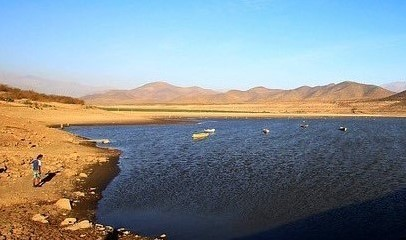
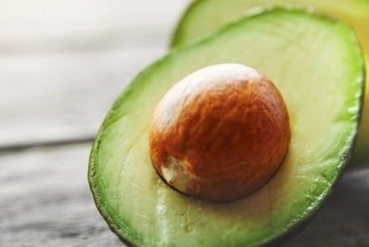

Chile se está secando: descenso de aguas superficiales causa preocupación a nivel nacional

La disponibilidad de agua ha disminuido en un 37% en algunas zonas de nuestro país los últimos años. La laguna de Aculeo, el lago Caburgua, el río Huasco, el río Copiapó y el lago Colbún son solo algunos de los más afectados por la falta hídrica. Esto ha generado drásticos cambios en sus caudales o en algunos casos cayendo, llegando incluso a la desaparición. Hasta hace 15 años se decía que el agua superficial bastaba para cubrir las necesidades de nuestra población, hoy los expertos se encuentran preocupados con la situación.
Chile se enfrenta a un escenario donde la escasez del recurso hídrico es parte del día a día
Como chile se enfrenta a la crisis del agua.
Hace algunos años se hablaba de que el agua era un recurso natural, renovable e ilimitado. Pero hoy esa idea ha cambiado debido, principalmente, al desarrollo económico de los países y el crecimiento de población. La visión actual es de un renovable pero limitado, del que sólo un porcentaje mínimo puede ser consumido por el ser humano.
Auge de exportaciones de paltas agrava crisis de escasez de agua en Petorca
Con las fuentes locales de agua secándose como resultado de la intensificación de las sequías y el regado de la palta, muchos vecinos sobreviven con el agua que entregan camiones cisterna.
Sus abundantes recursos ayudan a hacer de Chile el tercer mayor exportador mundial de paltas, el ingrediente principal del famoso guacamole mexicano. Pero el precio de este auge, dicen los residentes, se ve reflejado en una severa escasez hídrica.